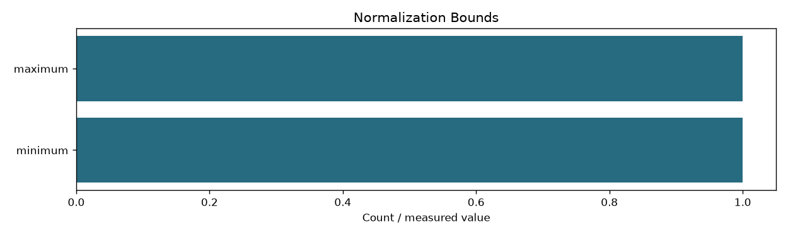
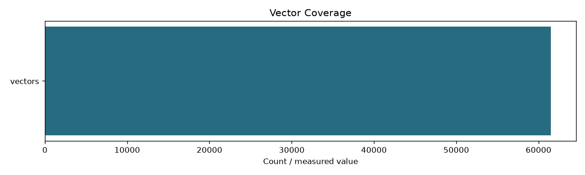

| fingerprint | 84a3aae43bc761c9b3b4c75d793e7f5cc41cde6f7de6b93559e68f16bfb989dc |
|---|---|
| input_fingerprint | 8a81be6e4f7c0fc4a0cf5430658651c7e01d91166594771dfa3428d168fe3088 |
| documents | 68414 |
| passages | 61511 |
| dimension | 1024 |
| dtype | float16 |
| model_revision | 97b0c614be4d77ee51c0cef4e5f07c00f9eb65b3 |
| all_vectors_finite | True |
| norm_min | 0.9997633695602417 |
| norm_max | 1.0002410411834717 |
| vector_bytes | 125974656 |
| last_session_seconds | 327.91 |
| last_session_rows | 61511 |
| device | cuda |
| final_batch_size | 512 |
| max_batch_tokens | 100000 |
| peak_cuda_allocated_bytes | 3875128320 |

